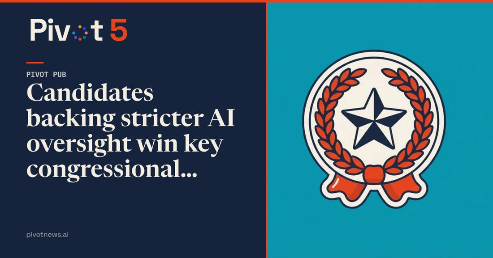

Anthropic-Backed Public First Spent $63M+ as 10 of 17 AI-Safety Candidates Won
Bloomberg reported on November 7, 2026 that Anthropic-backed AI safety super PAC Public First spent more than $63 million on the 2026 midterms and 10 of the 17 congressional candidates it backed won, in a broader $110 million fight over AI policy. The group is funded by Anthropic co-founder Dario Amodei and other AI safety advocates; Anthropic gave $20 million in February to the affiliated advocacy nonprofit Public First Action.

- 01THE PRINT — Bloomberg reported on November 7, 2026 that Public First spent more than $63 million on the midterms and 10 of the 17 congressional candidates it backed won, in a broader $110 million fight over AI policy.
- 02THE BACKING — The group is funded by Anthropic co-founder Dario Amodei and other AI safety advocates; Anthropic gave $20 million in February 2026 to the affiliated advocacy nonprofit Public First Action.
- 03THE WATCHPOINT — Whether the winning candidates turn campaign positions into AI legislation, and what the next disclosure cycle shows about who funds the next round of the fight.
WHAT HAPPENEDWhat Happened
Anthropic-backed AI safety super PAC Public First spent more than $63 million on the 2026 midterms, Bloomberg reported on November 7, 2026, and 10 of the 17 congressional candidates it backed won their elections. Candidates who favor stricter oversight of artificial intelligence won a run of key congressional races, helped by the pro-regulation funding group, at a point when Americans are growing more uneasy about the pace of the technology's development.
Bloomberg framed the overall contest over AI policy as a $110 million fight, a figure that extends beyond Public First's own spending. The group is funded by Anthropic co-founder Dario Amodei along with other AI safety advocates, and is backed in part by Anthropic PBC. Anthropic gave $20 million in February 2026 to Public First Action, the affiliated advocacy nonprofit, and Amodei gave $1 million personally to the super PAC in May.
WHY IT MATTERSThe AI industry just fought its first election as a spender
Until this cycle, the AI industry's political footprint was lobbying and position papers. Public First turned it into election spending: $63 million behind named candidates, with a win rate to show for it. Ten of seventeen is not a sweep, but it is a measurable return on a first attempt, and it puts a price on a congressional seat that favors AI regulation.
The result also settles, for now, which side of the industry spends better. The pro-regulation camp organized first, raised from the labs themselves, and won more of the races it contested. The accelerationist side spent heavily too, and Bloomberg's $110 million framing makes the scale plain: AI policy is now a line item in American elections, not a sidebar to them.
WHY IT MATTERSThe fight moves from campaign ads to legislation
Winning seats is the easy half. The backed candidates now have to write and pass rules on a technology that moves faster than the legislative calendar, while the labs that funded them keep shipping. The test of this $63 million is not the election night tally but whether a Congress with more pro-regulation members produces anything the industry has to obey.
The funding link is the vulnerability. Anthropic's money sits one step removed from the super PAC through an affiliated nonprofit, and its donations are described as restricted to policy and public-education work rather than election spending. Opponents will keep pulling at that thread. The next disclosure cycle, not the next press release, is where this story gets its second chapter.
SIGNAL JUDGMENT — ANALYSISThe AI industry bought its first election result
Tokenta Signal's judgment: $63 million and ten seats is the AI industry's first measurable election result, and it went to the side that wants rules. The labs spent years arguing about safety in papers and posts; this cycle they bought ads and won races. The money worked once, so it will come back larger next cycle, and the argument now is not whether AI companies belong in politics but what the candidates they elected actually do with the seats.
WHAT REMAINS UNCERTAINWhat Remains Uncertain
EVIDENCEEvidence
Bloomberg reported on November 7, 2026 that Anthropic-backed AI safety super PAC Public First spent more than $63 million in the 2026 midterms and that 10 of the 17 congressional candidates it backed won their elections, in a broader $110 million fight over how Washington treats AI.
PRIMARY SOURCESPrimary Sources
- Bloomberg (via BizToc/Techmeme): Anthropic-backed AI safety super PAC Public First spent $63M+ in the 2026 midterms, and 10 of the 17 congressional candidates it backed won their elections
https://biztoc.com/x/8a2ff37c820ac2ea - Pivot News: Candidates backing stricter AI oversight win key congressional races
https://pivotnews.ai/public-sector/candidates-backing-stricter-ai-oversight-win-key - FourWeekMBA: AI Super PACs Have Spent $81M on the Midterms, Filings Show
https://fourweekmba.com/ai-super-pacs-have-spent-81m-on-the-midterms-filings-show/